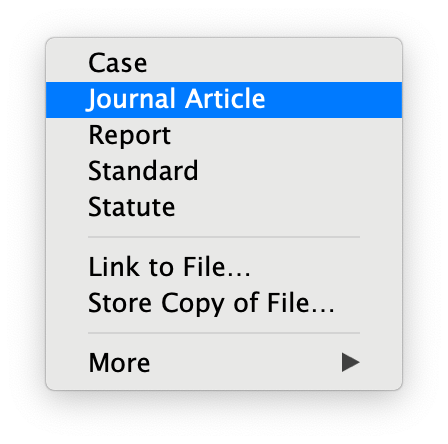

3 Using Zotero
3.0.1 Getting Started
4 Your Library
Once installed, Zotero can be opened by navigating to where you have installed the program and double-clicking on its icon. This will open the Zotero window:

The library has three main panels, which are labeled below:

Left section allows you to navigate your library’s folder system. It is from this panel that you can build reference collections or create group libraries to share with others.
Middle section provides a list of the references contained in the library or selected collection. Each reference will be listed horizontally.
The right panel lists the bibliographic metadata (e.g., author, title) associated with each reference.
4.0.1 The Zotero toolbar is situated at the top of the Zotero window:
 The toolbar includes most of the main functions you will use:
The toolbar includes most of the main functions you will use:

New Collection: This button allows Zotero users to create folders, or “Collections,” in their Zotero library. Collections enable users to easily organize and group related references into distinct subgroups.
New Library: This button allows Zotero users to create multiple group libraries, each of which is separate from the user’s main library. Group libraries can also be shared with other Zotero users.
New Item: This button allows a user to manually add a new reference to their Zotero library.
Add Item by Identifier aka Magic Wand thingy!: This button enables users to quickly add references to their library by entering in a key numerical identifier (e.g., ISBN, DOI).
New Note: This button allows users to create “notes.” Notes can be associated with specific Zotero entries, and they allow users to record additional textual information about those entries.
Add Attachment: This button allows users to add files (such as PDFs) to their Zotero library. Attachments, like notes, can then be associated with individual Zotero entries.
Advanced Search: This button allows the user to perform an advanced search of their library.
Search Bar: This button allows the user to search their library for keywords and tags.
Zotero Server Sync: This button will synchronize the user’s desktop library with their cloud-based library. This feature will only work if a user has created and has logged into a Zotero account.
4.0.2 Preferences and Settings
If you want to adjust any of the program’s default settings you need to go through Edit ➜ Preferences or Zotero ➜ Settings

You will need to adjust the defaults to take advantage of some of the more helpful features.
For example, to ensure that Zotero will automatically capture available PDFs and snapshots of webpages when importing references, go to the “General” tab and select the boxes marked as “A” below.
To use tags or keywords within your own library you may also want to check the settings marked a “B” below.

4.1 Using Zotero
4.1.1 Add a collection
A collection is like a folder. You will want to create a new collection for each project or paper you are working on.
4.1.2 Add an item
Adding articles (or other items such as book chapters) to Zotero couldn’t be easier. Simply open Zotero, then drag and drop the pdf into “My Library” in the left pane. You can set up different “collections”, which is helpful to organize references by class assignment, for example, but this is not necessary unless you wish to do so.
4.1.4 Zotero “Items”
In Zotero, an item is simply a kind of entry in your library. It may be an article pdf, a book chapter pdf, or even a web address. In your library (the left pane), you will see a list of all of the items you have saved in Zotero. The entry you see is just the info… to read the item, click on the drop-down arrow at the left of the item and it will display the pdf – double click this to open it in the PDF Reader. This is an important distinction – clicking the entry itself will display the related Metadata (see below), or information about the item. Clicking the pdf from the drop down will not show that metadata.
Metadata is the term for the information about the item you are adding, for example a journal article has information associated with it which we need to create a reference – info such as the title of the paper, the author(s) name(s), the date it was published and the journal name. The good news is that when you add a new item, Zotero automatically searches for the metadata on the web. It is available roughly 90% of the time for articles published in the last 20 years or so. The rest of the time, it will have some, but not all, of the info.
Editing Metadata is necessary when some, or all, of the item info is not automatically added to Zotero. Click the entry for the item in your library (see above), which displays the item’s metadata in the right-side pane. Clicking inside this pane allows you to enter info or in some cases, such as item type, to select from a drop-down menu. This is the most important step of adding an item to your Zotero library. When you ask it to create a citation or reference page for you, it will pull the necessary info from this pane. If this info is absent or incorrect, the citation will also be incorrect! Using the APA references handout(s), identify the correct type of item that you have (most often this is a journal article). Now, look to see what info is included in a citation for that item type – make sure that the corresponding fields in the metadata in Zotero are filled out and accurate!
4.1.5 Creating Citations
To create individual citations, simply right click on the item’s entry in your library, select “Create Bibliography from Selected Item(s)”, choose APA 7th edition, and copy to clipboard. You can now paste it into Word (or anywhere else). https://www.zotero.org/support/creating_bibliographies
Again, using the Word plugin is infinitely more efficient, you can find those instructions here: https://www.zotero.org/support/word_processor_plugin_usage
4.1.6 Creating Items Manually
We can’t always find that PDF of an article we are looking for, sometimes it’s behind a paywall or it simply doesn’t exist on the web. Maybe you want to cite an encyclopedia, but can’t get the PDF of the whole thing, or even the entry… no problem. What we want to do here, is still be able to use Zotero to create the citation for us, so we will manually add an item to our library. In this case, the item won’t actually contain the PDF, but this will allow us to add the metadata by hand so that Zotero can create the citation. Use this to create the item: https://www.zotero.org/support/adding_items_to_zotero And then, refer to the metadata sections above to add the relevant info.
4.1.7 Add a citation style
APA Manual - 7th edition examples
Within the Repository, you can search by style name. Also, you may install a style from a local file on your computer. When you add a style to your Repository, it will appear in your word processor plugin, and you can use it when you add citations and bibliographies to your writing.
For additional information on using styles within Zotero, see Zotero’s Citation Styles page.
Navigate to preferences
Zotero desktop application edit menu with preferences selected
Open the Edit menu and select Preferences.
Get additional styles
Zotero desktop application Preferences dialog
In the Preferences window, select Cite from the tabs along the top. Since the Bluebook style isn’t among those listed, select Get additional styles…
In the box that appears, search for “Bluebook”. Select Bluebook Law Review for the footnote citation style (Bluebook white pages) or Bluebook Inline for in-text citations (Bluebook blue pages). The selected style should now appear in the Preferences dialog. Select OK to exit Preferences.
4.1.8 Generating Citations
Word processor plugins Download a plugin Zotero allows you to automatically generate citations for sources in your Zotero library and add those citations directly into a document as you type. To take advantage of this feature, you should first download a plugin that is compatible with your word processor. The Zotero page on word processor integration has links to plugins for Word, LibreOffice, and third-party plugins for other programs. The Zotero integration with Google Docs is included in the browser extensions for Chrome, Firefox, Safari, and Edge. See the link above for instructions on how to download and use Zotero in the word processor of your choice.
4.1.9 Legal Citations
(Bluebook) or The Indigo Book
Zotero has only limited support for creating citations for legal cases and documents. But for more lew heavy projects you can use Juris-M, a community-driven unofficial version of Zotero specifically designed for compliance with legal citation requirements. It it built on the same code, so it works the same way, and you can even use the same zotero account.
For a more in depth guide to using Zotero or Jurism for legal scholarship and citation go here
Editing citations As noted above, you will need to edit the citations generated by Zotero because they will not always adhere to Bluebook rules. Since the Zotero citations are dynamically linked to your Zotero library, however, your edits will disappear when your citations refresh unless you take the steps below:
Type your document and insert citations as you type. Leave incorrectly-formatted citations as is for now. You can keep track of the edits you will need to make using comments in the document. Check over the accuracy of all your bibliographic information. Do this by checking the sources in your Zotero library using the desktop client. Select “Refresh” (the icon is a blank page with green arrows pointing in a circle:Zotero refresh icon) in your Zotero plugin or in the Zotero menu on Google Docs to see the changes reflected in your citations. When you are sure that you have cited all the sources you plan to cite, and that the information for these sources is entered correctly in your library, select “Unlink Citations” (the icon is a broken chain: ). This action is irreversible so do not unlink until you are done citing. Now your citations have been converted to regular text, and you can go through your document and edit them as necessary. Even if you aren’t editing your citations, you should unlink them when you have finished the document in order to preserve your work as is.
4.1.10 Tips & Tricks
This page covers how to add tags, search within tags, back up your Zotero Library, and where to find help for using Zotero.
The Tags tab shows the tags that were included with the article when the item was first created by Zotero. You can also add your own tags here.
Screen capture of Zotero desktop application tags tab
If Zotero detects metadata as part of a catalog record associated with the item you saved, Zotero will sometimes add that information as a tag.
Zotero displays tags for library items in the lower, left corner.
Zotero desktop application tags pane
Click on a tag to see all items in your Zotero Library associated with that tag.
Note that you can search all items saved in Zotero using the search bar at the top. Search by the name of any field or tag.
There are many resources on the Internet for understanding how Zotero works and using Zotero to organize references.
As you begin to use Zotero, review the Zotero Quick Start Guide which includes detailed information on both automatically and manually adding items to Zotero, searching within Zotero, creating bibliographies, and answers to frequently asked questions.
Another resource to consider is the Zotero Support page which includes the above-mentioned information as well as information on Zotero plugins.
Ask questions about Zotero, search for answers, and discuss features of Zotero in the Zotero Forums. You must have a Zotero account to post comments in the Zotero forums.
Back up your Zotero library
Your Zotero data directory contains your entire Zotero library.
There are two ways you can back up your data directory so that you will still have your information if your hard drive crashes.
Sync to the cloud with Zotero
When you create a Zotero account, you can set up automatic sync with an online version of your Zotero library. This option also allows you to access your Zotero library from any computer with an internet connection. Read about setting up sync on the Zotero website.
Find the Zotero data directory on your computer
You can also locate the Zotero data directory on your computer and include it in your usual data backup procedures.
First, find where your data directory is located.
Navigate to the Edit menu and then click on Preferences.
Zotero Desktop edit menu with arrow pointing to Preferences
In the Zotero Preferences menu that opens, click on Advanced. Then select the Files and Folders tab.
From here, you may either click on “Show Data Directory” or navigate to the location shown for the data directory here.
4.1.10.1 Zotero Desktop Preferences dialog
Important: Before backing up your data directory, close your web browser and the Zotero desktop application.
Back up the data directory however you prefer. For example, you can copy the folder to an external storage device.
5 Using Zotero with RMarkdown or Quarto
Setup ## Create stable citation keys
While writing our papers, we want short but recognizable identifier keys for our citations. For this we use the “Better BibTex for Zotero” Add-on. Go to the Better Bibtex website and follow the installation instructions.
In the Zotero preferences (Better bibtex tab), I changed the “Citation Key Format” to create keys like verhoeven_etal20.
[auth.etal:lower:replace=.,_][>0][shortyear]|[veryshorttitle][shortyear](This snippet comes from Dewey Dunnington’s blog that was a big help in getting my workflow up and running)
This should automatically create / update all the citations keys in Zotero.
5.0.1 Word plug-in
If you would like to use Zotero directly in Microsoft Word, you can find the plugin here: https://www.zotero.org/support/word_processor_plugin_usage
This functionality is more advanced and will take you a few more minutes to learn to use, but it makes life so much easier! You can still generate references in Zotero without it, but you will need to do them one at a time, and you still need to properly order them on the references page (alphabetically) as well as add the proper hanging indents and line spacing. With the plugin, you add in-text citations as you type your paper, then creating the reference page is as simple as clicking one button!
Rstudio is where we actually write the paper. We use the .Rmd Rmarkdown format. This format consists of a YAML header, followed by a body that consists of Markdown formatted text with optional code chunks, figures and tables interspersed. Version control is through Git.
Important thing to check: make sure that your .Rmd file uses UTF-8 encoding. In Rstudio, File --> Save with Encoding --> UTF-8 can set this straight if somehow you ended up with a file in the wrong encoding.
Check the Rstudio website for more info on Rmarkdown.
Note The latest version of Rstudio (1.4) contains a new editing mode for Rmarkdown, “the visual markdown editor”, that contains support for inserting citations from Zotero. I am not sure yet whether I like this, and noted that on my system, it was still buggy, and the editor, when invoked, makes CHANGES to the markdown code. Brrr. Therefore, this blog post does not make use of this new feature.
Hold on, almost there. We’re in Rstudio, and writing our paper. Now comes the moment where we want to cite something! Now we need a connection to Zotero. There are two Rstudio Addins that compete for this functionality, citr and rbbt. Both packages are not on CRAN and therefore need to be installed from Github. I tried them both out, and went for rbbt as citr does not support CSL-JSON and rbbt appears slightly leaner.
remotes::install_github("paleolimbot/rbbt")After installing and restarting Rstdio, the rbbt addin can be found under Addins. Now since citing stuff is a common activity while writing a paper, we want a keyboard shortcut for this. I put it under CTRL + K where K stand for errr, Knowledge ?
To bind rbbt to a particular keyboard shortcut, do the following: First, in RStudio, choose Tools --> Modify Keyboard Shortcuts. Type zotero to filter out the Zotero plugin. Click on the ‘Shortcut’ field for the ‘Insert Zotero citation’ addin row, and type the desired shortcut keys.
In Rstudio, we can now press CTRL+K, type the name of the first author, select the citation, press enter, and have the citation key added to our .Rmd document.
Now that we have an Rmarkdown document filled with citation keys that references citations in Zotero, we still need one more thing, and that is to create the actual .bib or .json file containing the cited references.
Here I describe the simplest approach. We go to Zotero and export all the references using “Export Collection” , and choosing CSL JSON, save the file as references.json in the same folder as your Rmd paper. CSL-JSON is an emerging standard that is recommended by Yihui Xie, author of Rmarkdown.
In Rstudio, we add to following line to our YAML header:
bibliography: references.jsonrbbt has the functionality to automatically create a bib/json file that ONLY contains the references that are cited in the Rmd document. I haven’t tested this yet, but this would be the icing on the cake. Instructions for this are on the rbbt Github page.
Update 03/2023 You can try adding the following entry to your YAML header:
bibliography: "`r rbbt::bbt_write_bib('bibliography.json', overwrite = TRUE)`" At this point, we can knit our Rmarkdown document, and it will contain the cited references appended at the end of the HTML/PDF/Word generated output document.
However, the references are (most likely) not yet properly formatted for the journal we want to send it to. For example, the journal “Health Services Research” wants the references in the main text to be numbered, and the reference list sorted in the order of appearance, and formatted according the APA format (whatever that is).
Luckily for us, enter the Citation Style Language project. They created a common standard, CSL, and a crowdsourced repository, that contains more than 10.000 free citation styles. All we need to do is grab the CSL file for our target journal!
Go to the Zotero Style Repository , search for the target journal name (in my case Health Services Research) and click on the result. This downloads a CSL file that we add to our Git repo containing the manuscript.
Still here? Great. Now we are ready for the final step. This one is for our collaborators (who we feel sorry for, because they use Word and miss out on all the Rmarkdown fun), and for those journals, that force us to submit our manuscript as a Word file.
In Rstudio, we add the following code to the YAML header:
output:
word_document:
reference_docx: style_template.docxThis tells Rmarkdown to use the Word formatting styles contained in the style_template.docx file. For me, this contains at the moment three things: A4 page size, double line spacing, and numbered lines.
Follow the instructions by Rstudio to make this template. In short, you let Rstudio’s pandoc generate a Word document from a .Rmd file, and tweak the formatting styles of that document. Name the document style_template.docx and keep it with your .Rmd manuscript. I can confirm that this also works when you edit this document using LibreOffice / OpenOffice.